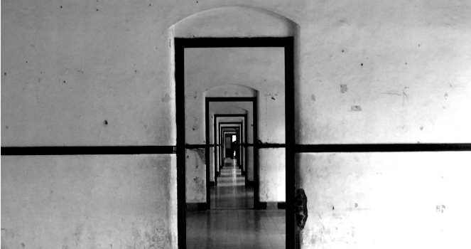
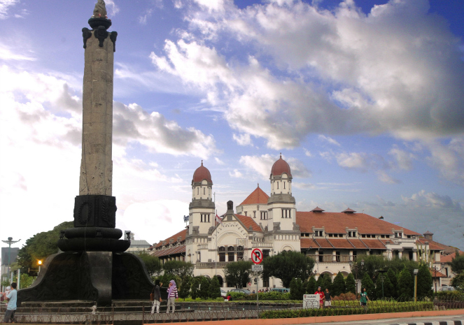

Lawang Sewu


Semarang - Lawang Sewu merupakan sebuah bangunan kuno peninggalan jaman belanda yang dibangun pada 1904. Semula gedung ini untuk kantor pusat perusahaan kereta api (trem) penjajah Belanda atau Nederlandsch Indishe Spoorweg Naatschappij (NIS). Gedung tiga lantai bergaya art deco (1850-1940) ini karya arsitek Belanda ternama, Prof Jacob F Klinkhamer dan BJ Queendag. Lawang Sewuterletak di sisi timur Tugu Muda Semarang, atau di sudut jalan Pandanaran dan jalan Pemuda. Disebut Lawang Sewu (Seribu Pintu), ini dikarenakan bangunan tersebut memiliki pintu yang sangat banyak. Kenyataannya, pintu yang ada tidak sampai seribu. Bangunan ini memiliki banyak jendela tinggi dan lebar, sehingga masyarakat sering menganggapnya sebagai pintu.

Berapakan sebenarnya jumlah pintu dari Lawang Sewu? Seperti Kepulauan Seribu yang jumlah pulau yang sebenarnya tak sampai 1.000, karena tercatat hanya 342 buah bulau saja. Sebutan “Sewu” [Jawa: Seribu], merupakan penggambaran sedemikian banyaknya jumlah pintunya. Menurut guide lawang sewu, jumlah lubang pintunya terhitung sebanyak 429 buah, dengan daun pintu lebih dari 1.200 (sebagian pintu dengan 2 daun pintu, dan sebagian dengan menggunakan 4 daun pintu, yang terdiri dari 2 daun pintu jenis ayun [dengan engsel], ditambah 2 daun pintu lagi jenis sliding door/pintu geser).

Bangunan utama Lawang Sewu berupa tiga lantai bangunan yang memiliki dua sayap membentang ke bagian kanan dan kiri bagian. Jika pengunjung memasukkan bangunan utama, mereka akan menemukan tangga besar ke lantai dua. Di antara tangga ada kaca besar menunjukkan gambar dua wanita muda Belanda yang terbuat dari gelas. Semua struktur bangunan, pintu dan jendela mengadaptasi gaya arsitektur Belanda. Dengan segala keeksotisan dan keindahannya Lawang Sewu ini merupakan salah satu tempat yang indah untuk Pre Wedding.
Copyright © 2013 DINHUBKOMINFO - Pemerintah Prov. Jawa Tengah. All rights reserved. Developed by : Web_Design_2013